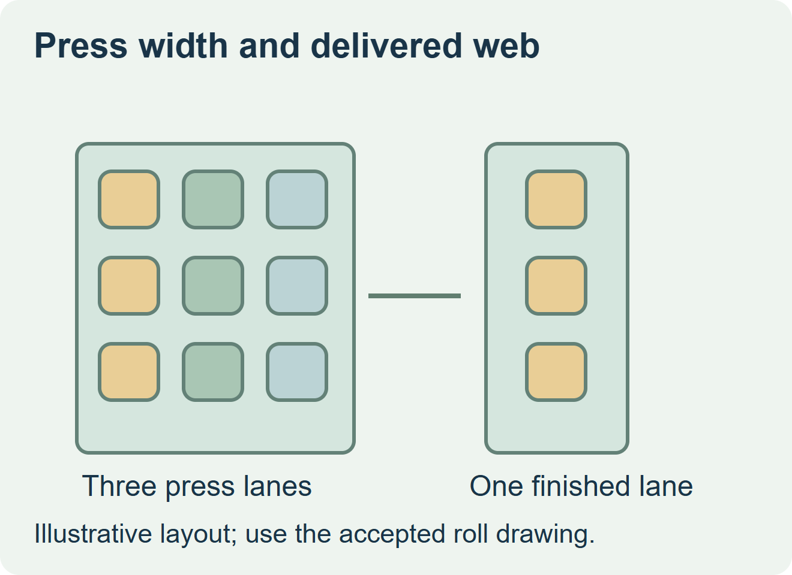
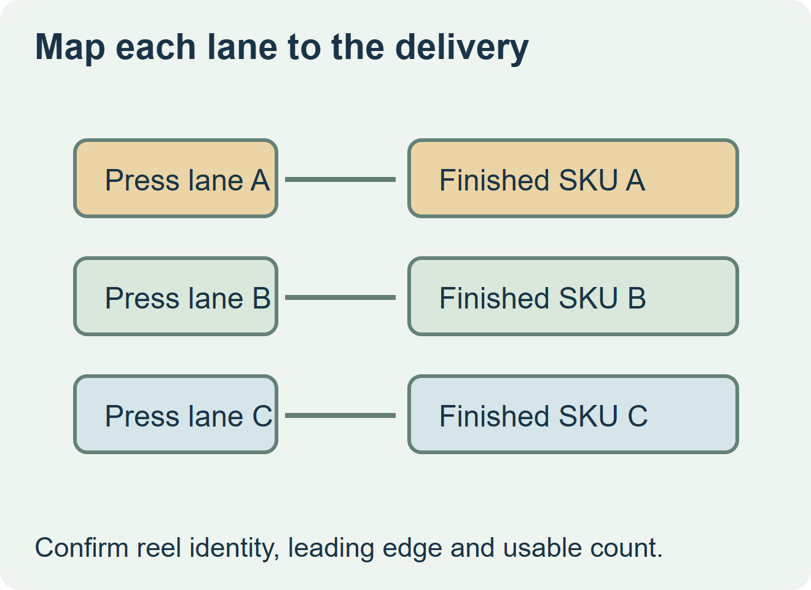

Specify the number of lanes on the delivered roll from the equipment that will use it. If the applicator takes one lane, ask the converter for single-lane finished rolls even if the press prints several lanes across. If the installed printer or applicator is designed for multi-across stock, approve that exact web and the equipment’s supported layout before release.


Approve two different views
Use one drawing to show how the converter prints and slits the web. Use a second drawing to describe what is mounted on the line, including its width, label position, repeat, unwind and leading edge. AutomatePrint’s documentation treats press width and slitter limits as separate constraints. A converter’s application guide likewise lists web layout and unwind among the final roll requirements. AutomatePrint’s label-lane documentation and CNN Label’s application guide
| View to approve | Required information | Where it is used |
|---|---|---|
| Press and finishing layout | Lane contents, slitting plan and any transitions between artworks | Compare production and finishing proposals. |
| Finished roll drawing | Usable label lanes, liner margins, core, unwind and leading edge | Approve stock for the installed line. |
| Delivery tally | Accepted labels and rolls by SKU, plus identification of any short rolls | Plan actual finished packs and purchase quantities. |


Match the quote to what comes off each roll
In a hypothetical sauce launch, the press layout carries apple, pepper and garlic artwork side by side. The bottler’s station uses one label at a time from one roll. Ask which lane becomes each finished roll and how the converter identifies the short rolls after slitting. Confirm unwind from a physical sample or unambiguous drawing viewed at the labeler. Approve each SKU against the same accepted finished roll specification.
When a proposal keeps several labels across the web, ask the equipment owner how it locates each position, how the labels are removed, and whether any same-row duplication is intended. Confirm the printed or applied output by position on a representative web. Compare the quotes by usable delivered pieces per SKU and by the actual handling needed on site.
Discuss the unresolved label requirement
Send the installed equipment model, accepted finished web drawing and sample roll, each SKU quantity, finished roll capacity, core, unwind and label leading edge. Ask for a separate press-lane-to-delivered-roll map. Review food label options and prepare a label specification inquiry. The contact page opens an email draft and lists email or WhatsApp for attachments. Supply, proof options, testing, pricing and timing require project confirmation.